SIMLAF Audio / Catalogue
Catalogue
Every product. Every number.
Every SIMLAF Audio product on one page. Search it, filter it by what matters to you, or answer three questions.
macOS now · Windows coming December 2026 (UKWELI 2's in January 2027)
Products
-
 Hear it OFF and ON
Hear it OFF and ONSIMLAF Spectral
Resonance suppression and spectral dynamics, at zero latency.
- 97 checks
- 1/48 oct
$790 samples -
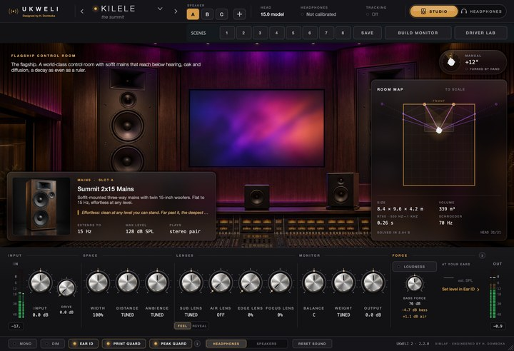
UKWELI 2
Mix on headphones inside modelled control rooms, with a separate mode for the monitors on your desk.
- 88 spaces
- 148 speakers
$7972 samples at 48 kHz -
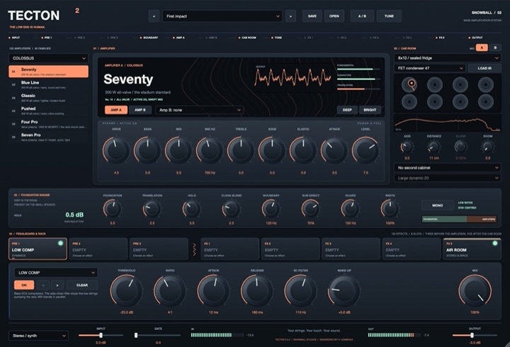
TECTON 2
A bass amp system: 120 amps, 221 sounds.
- 120 amps
- 150 effects
$796 samples -
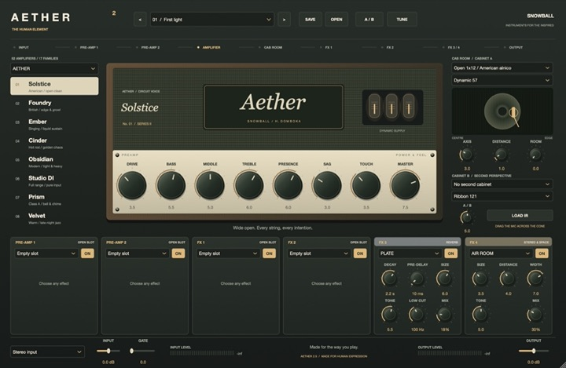
TUFANI
A guitar amp suite with tone stacks computed from component values.
- 52 amps
- 77 effects
$796 samples -
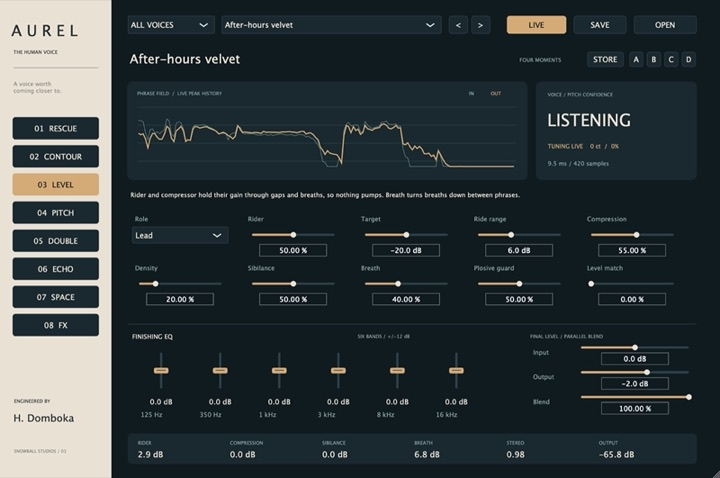
AUREL
A complete vocal chain, from repair to space.
- 85 racks
- 4 Scenes
$79 -
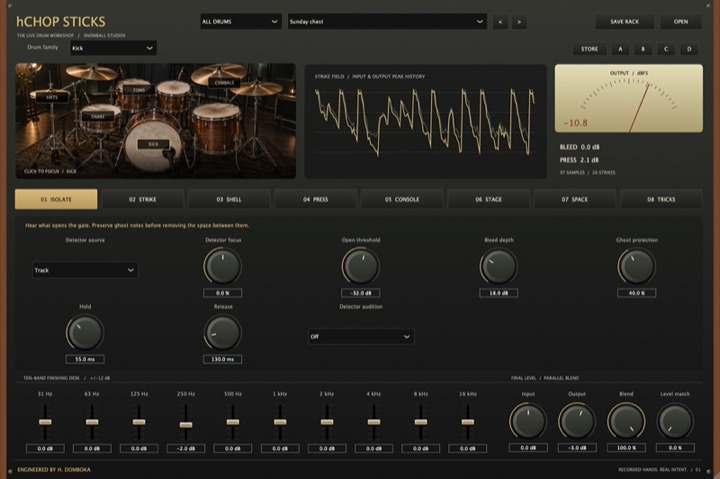
hCHOP STICKS
A drum channel strip for every part of the kit.
- 81 racks
- 10 bands
$79104 samples at 48 kHz -
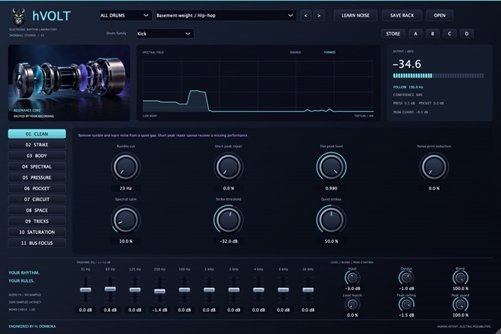
hVOLT
A beat and 808 processor that rebuilds the low end.
- 135 racks
- 4 circuits
$791,096 samples -
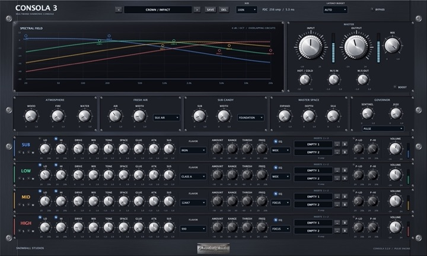
CONSOLA
Multiband console saturation, with your own plug-ins inside each band.
- 5 ms
- 16 voices
$795 ms -
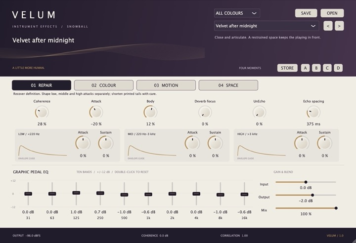
VELUM
An effects rack for keys and synths.
- 71 racks
- 10 bands
$79 -
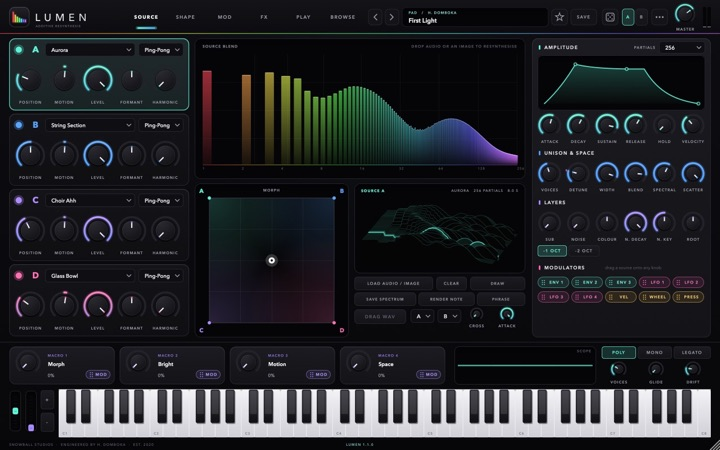
LUMEN
Additive resynthesis, up to 1,024 partials per voice.
- 1,024 partials
- 372 presets
$79 -

EMBER
Modelled electric pianos, with tones solved from physics.
- 14 bit
- 144 presets
$79 -
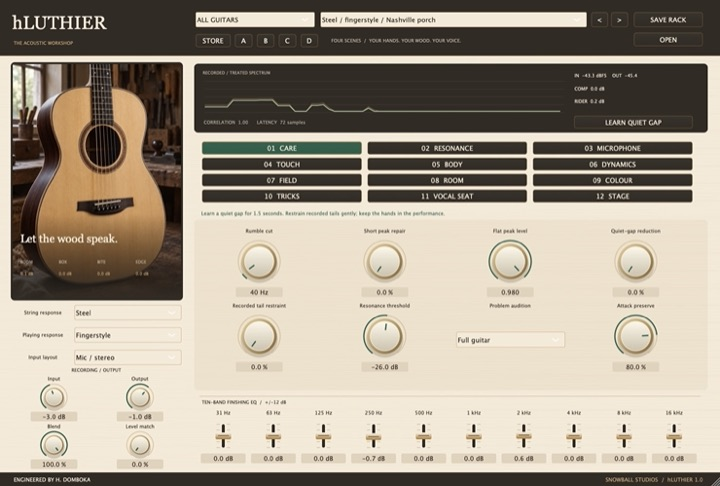
hLUTHIER
An acoustic guitar processor built on modelled bodies.
- 8 tunings
- 2 voices
$79 -

SIMLAF Compressor
Seven compressor characters in one, at zero latency.
- 7 Characters
$490 samples -

SIMLAF EQ
A 20-band dynamic EQ with analogue-matched filters.
- ±0.05 dB
- 100:1 Maximum per-band ratio
$490 samples -
SIMLAF FXDynamics & EQ0 samples
SIMLAFLimiter
- 0 overs
SIMLAF Limiter
True-peak limiting with standards-based loudness metering.
- 0 overs
- 0.1 LU
$490 samples -

SIMLAF Multiband
Up to six bands of compression, expansion or upward compression.
- 0.1 dB
- 6 Bands
$490 samples -
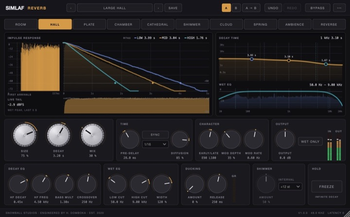
SIMLAF Reverb
Ten reverb algorithms on a 16-line network.
- 10 Algorithms
- 16 lines
$490 samples -
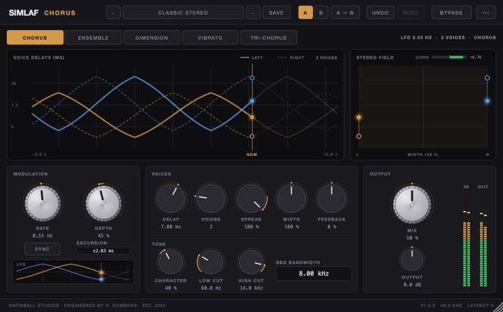
SIMLAF Chorus
Five chorus types, including Dimension.
- 5 Types
$290 samples -
SIMLAF FXDynamics & EQ0 samples
SIMLAFDe-Esser
- Split or wide band
SIMLAF De-Esser
Split-band or wide-band de-essing, with auto threshold.
$290 samples -
SIMLAF FXSpace & Movement0 samples
SIMLAFDelay
- 6 Modes
SIMLAF Delay
Six delay modes, from clean stereo to dub.
- 6 Modes
$290 samples -
SIMLAF FXColour, Pitch & Stereo0 samples
SIMLAFDrive
- 9 Saturation models
SIMLAF Drive
Nine saturation models, oversampled, with no added latency by default.
- 9 Saturation models
$290 samples -
SIMLAF FXColour, Pitch & Stereo0 samples
SIMLAFExciter
- True harmonics
SIMLAF Exciter
True harmonics, without intermodulation.
$290 samples -
SIMLAF FXColour, Pitch & Stereo0 samples
SIMLAFFilter
- 8 Filter models
SIMLAF Filter
Eight filter models, from ladder to wah.
- 8 Filter models
$290 samples -
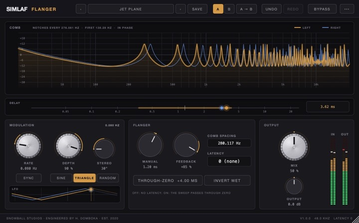
SIMLAF Flanger
Classic and through-zero flanging.
$290 samples -
SIMLAF FXDynamics & EQ0 samples
SIMLAFGate
- Three jobs
SIMLAF Gate
Gate, expander and ducker, without chatter.
$290 samples -
SIMLAF FXColour, Pitch & Stereo0 samples
SIMLAFImager
- Width
SIMLAF Imager
Stereo width with a mono-safe low end.
$290 samples -
SIMLAF FXDynamics & EQ0 samples
SIMLAFIsolator
- 3 Bands
SIMLAF Isolator
A 3-band DJ kill EQ.
- 3 Bands
$290 samples -
SIMLAF FXColour, Pitch & Stereo0 samples
SIMLAFLo-Fi
- Bits and rate
SIMLAF Lo-Fi
Bits, rate, wow, flutter, hiss and crackle.
$290 samples -
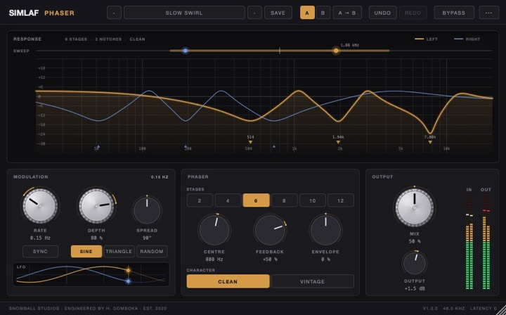
SIMLAF Phaser
A phaser from 2 to 12 stages.
- 12 Maximum stages
$290 samples -
SIMLAF FXSpace & Movement0 samples
SIMLAFStep FX
- 32 Maximum steps
SIMLAF Step FX
Three step lanes of rhythmic effects, with swing.
- 32 Maximum steps
$290 samples -
SIMLAF FXColour, Pitch & Stereo0 samples
SIMLAFSub
- Sub-octave
SIMLAF Sub
Sub-octave and virtual bass, phase-locked.
$290 samples -
SIMLAF FXDynamics & EQ0 samples
SIMLAFTransient
- Attack and sustain
SIMLAF Transient
Attack and sustain shaping, with band focus.
$290 samples -
SIMLAF FXSpace & Movement0 samples
SIMLAFTremolo
- Tremolo
SIMLAF Tremolo
Tremolo, auto-pan and harmonic tremolo.
$290 samples -
SIMLAF FXColour, Pitch & Stereo6–15 ms
SIMLAFTune
- 6–15 ms
SIMLAF Tune
Pitch correction with 13 scales and formant preservation.
- 6–15 ms
- 13 Scales
$296–15 ms -
SIMLAF FXDynamics & EQ0 samples
SIMLAFVintage EQ
- 3 EQ types
SIMLAF Vintage EQ
Tube, console and graphic EQ types.
- 3 EQ types
$290 samples -

KAMILI
A complete mastering chain in one plug-in, at zero latency by default.
- 47 modules
- 22 targets
In The Whole Studio0 samples -

KARAKANA
Thirteen analogue units, modelled at component level, in a six-slot rack.
- 13 units
- 6 slots
In The Whole Studio68 samples at 48 kHz -
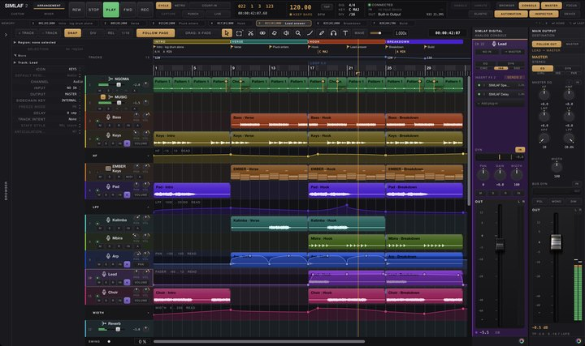
SIMLAF 2
The DAW that keeps what you just played.
- 10–300 seconds
- 16,384 messages
In The Whole Studio -
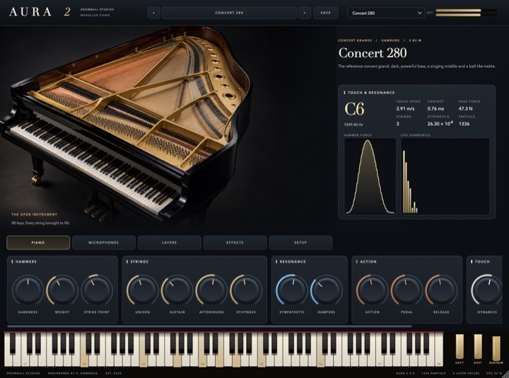
AURA
A modelled acoustic piano, from hammer, string and soundboard physics.
Notify me -
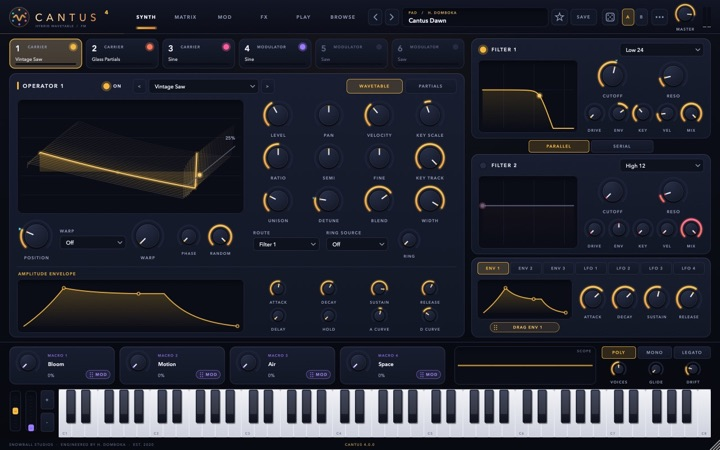
CANTUS 4
A hybrid wavetable and FM synth.
Notify me -
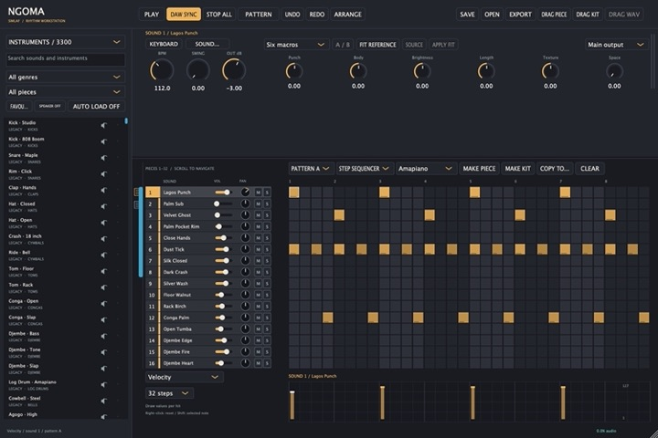
NGOMA 2
Modelled drums and a beat workstation.
Notify me -
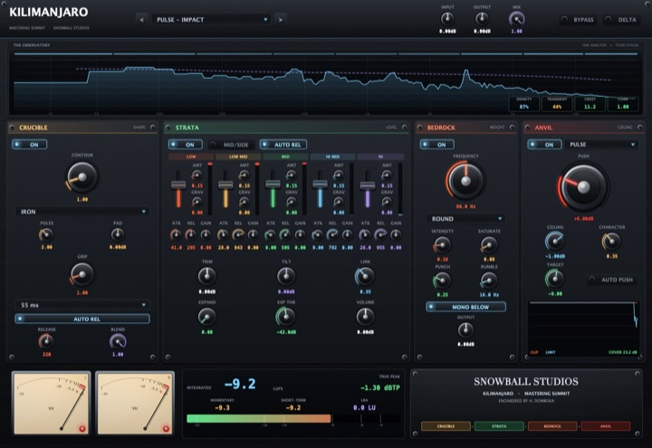
KILIMANJARO
A mastering loudness chain with phase-locked bass reinforcement.
Notify me -
January 2027Coming January 2027
FOUNDRY
- 20 nodes
FOUNDRY
A 20-node EQ with saturation underneath.
Notify me -
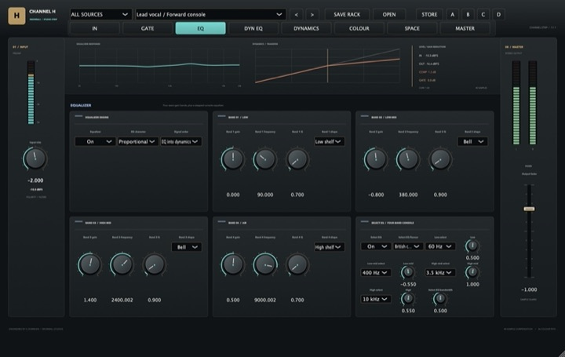
CHANNEL H
A channel strip with dynamic EQ, transients, colour compression and a binaural panner.
Notify me -
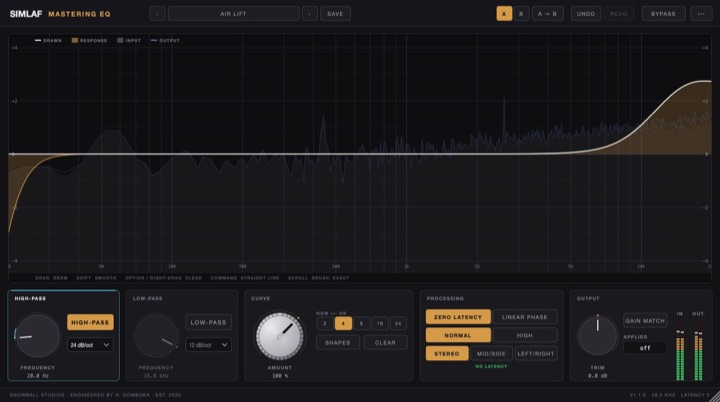
SIMLAF Mastering EQ
Draw the EQ curve by hand, at zero latency.
Notify me
Nothing matches that yet.
Clear a filter, or tell us what you were looking for. We read every request: hello@simlaf.com.
Not sure? Three questions.
Say what you work on and what matters. You get three products from this catalogue, why each one fits, and the simplest way to own them.
The finder needs JavaScript. Every product is in the list above, by category.
Buying more than one?
Four ways in, side by side. Every price is on this page, and every product has a free 14-day trial first.
| What you get | Single flagship | Producer Pack | SIMLAF FX Suite | The Whole Studio |
|---|---|---|---|---|
| Products at launch | 1 | 3 | 23 | 35 + 2 later |
| Flagships | 1 of 12 | 3 of 12 | — | All 14 |
| SIMLAF FX stock effects | — | — | All 23 | All 23 |
| Effects at 0 samples of latency by default | — | — | 22 of 23 | 22 of 23 |
| SIMLAF 2 DAW (December 2026) | — | — | — | ✓ |
| Worth at single prices | $79 | $237 | $767 | $1,715 |
| Price, one time | $79 | $179 | $99 | $199 |
| Price per product | $79 | $59.67 | $4.30 | $5.69 |
All four: a free 14-day trial first, free updates within the major version, up to 3 of your computers, no subscription. The Whole Studio: $199 until 31 January 2027, then $399.
Store opens 27 November 2026.